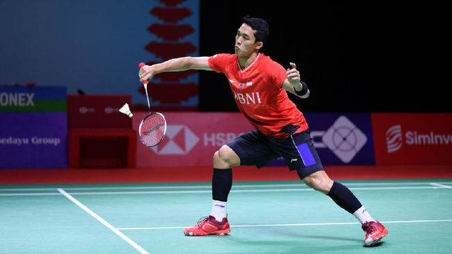

CNN Indonesia
Minggu, 10 April 2022
Jonathan Christie gagal menang di final Korea Open 2022
Jakarta, CNN Indonesia -- Jonatan Christie gagal juara juara Korea Open 2022 usai dikalahkan wakil China, Weng Hong Yang, Minggu (10/4).
Sempat unggul besar di gim pertama dengan skor 21-12, Jonatan malah anjlok di dua gim berikutnya dan kalah 19-21 15-21 dari Yang.
Jonatan mengawali gim pertama dengan sempurna. Unggul sejak awal pertandingan dan terus melesat hingga mengakhiri interval dengan skor 11-7.
Jojo, demikian Jonatan akrab disapa, mampu bertahan dengan baik dan berhasil menemukan kelemahan wakil China yang kurang mampu mengembalikan bola keras melalui back hand.
Sedikitnya empat poin diraih Jojo melalui smes menyilang di sisi back hand yang tak bisa dibendung Yang. Smes keras Jojo ke sisi back hand Weng Hong Yang mengakhiri gim pertama untuk keunggulan Jojo dengan skor 21-12.
Memasuki gim kedua, Weng Hong Yang mencoba tampil lebih agresif dan berhasil meraup empat poin beruntun dan membuat skor unggul 4-0.
Jonatan perlahan bangkit dan mampu memangkas jarak meski akhirnya tetap tertinggal 9-11 di pertengahan gim kedua. Smes keras Jojo ke arah kiri berhasil membuat skor sama kuat menjadi 11-11.
Setelah skor imbang, pertarungan berlangsung lebih sengit dan saling mengejar angka. Jonatan sempat berbalik unggul 13-12 namun berhasil disamakan Yang jadi 13-13, 14-14, hingga 15-15.
Setelah momen tersebut, Jonatan berhasil meraup tiga poin beruntun dan unggul 18-15. Sayangnya, kesalahan demi kesalahan yang dilakukan Jonatan justru membuka jalan bagi Weng Hong Yan untuk memenangkan gim kedua lewat skor 21-19.
Di gim ketiga, Jonatan berusaha meminimalisir kesalahan sendiri. Namun, pengamatan cermat yang dilakukan Yang membuat Jonatan tertinggal 7-11 di interval.
Jonatan mencoba tampil berhati-hati namun situasi itu malah membuat Yang tampil makin percaya diri hingga mampu unggul 16-11.
Jonatan mampu memangkas jarak jadi 15-16 namun akhirnya dipaksa menyerah 15-21 oleh pebulutangkis yang tak diunggulkan, Weng Hong Yang.
Ini merupakan final kedua Jonatan di Korea Open. Sebelumnya ia kalah dari Anthony Sinisuka Ginting di partai puncak Korea Open 2017.